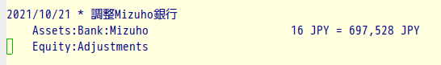

Ledger帳簿とクレジットカード利用明細との照合確認
1 帳簿の照合確認
帳簿 へのデータ入力は、どんなに細心の注意を払って作業してもタイプミスをゼロにすることはできません。
ただし 日付 は月をまたいだりしない限り多少のミスは許容できます1。
また 支払先 については、そもそもショップの正式名称、通り名などがクレジットカードの明細書上の略称と異なっていることがあります。支払先は（特に日本語では）「表記ゆれ」エラーが起こりがちな項目ですが、Ledger-cliでは対応策が用意されています2ので、これもさほど心配することはありません。
問題なのは 金額 。これは1円でも間違えると、あとあと面倒なことが起こります3。 帳簿と利用明細書の金額をきちんと照合・確認することは経理・帳簿付けの基本中の基本ですが、「言うは易し行うは難し」です。
1.1 照合確認の方法
これまでは、 PCの画面上に明細書のPDFを表示しながら、 その隣にLedgerファイルに基づいて算出した当該クレカの日々の支出額を表示し、 その両者を 見比べる という方法をとっていました。
明細書はPDFですが印刷物イメージ。 一方、コンピュータ上のスプレッドシートやリスト表示されたデータは明細書の印刷物イメージとはさまざまな点で別物です。 知覚的に大きく異なるこの両者を照合するのは心理的にはかなり高負荷な作業です。
とりわけある一定の年齢以上になると、 視力だけでなく眼の奥にある大事な臓器（脳）も こうした作業のチカラが落ちてきます。 ということで、毎月毎月、明細書とLedgerの帳簿の計算結果がなかなか一致しません。
これまでそれなりに工夫はしてきました。 たとえば印刷物イメージの明細書とをできるだけ似た形にして提示するとか、注視点の移動距離と頻度を下げるとか・・・。にもかかわらず、作業の苦痛はそろそろぼちぼち限界 :sweat:
しばらく試行錯誤していましたが、最近になってようやく自分なりの方法が確立しました。
それを紹介します。
明細書データのCSVデータをダウンロードして取得し
そこから日付と金額だけを抽出して
照合しやすいフォーマットのCSVファイルにする。
もう一方のLedgerデータもそれと同じフォーマットにする。
そうしておいて必殺colordiffを使う
2 まずは操作法の紹介から
クレカのサイトから利用明細書（CSV）をダウンロードします。
会社によって明細書のCSVファイルの形式はさまざまです。 ここでは、私が使っているカード＝ Costco Global Card (Orico MasterCard) を例にとってお話します。
ターミナで次のコマンドを入力します4。
$ date-amount抽出-f-orico明細.sh HOGExxxxxxxxxxxxx.csv
HOGE で始まる文字列はOricoのCSV形式の明細書です。
これを実行すると次のような日付と金額のデータだけの 単純なフォーマットのファイルが生成されます。
20220227 600 20220227 930 20220227 950 20220301 6960 20220302 1110 ：
これが出来たら、次に diff-orico.sh スクリプトを起動します。
$ diff-orico.sh
このスクリプトは
- 明細書と同期間のクレカ支出データをLedgerを使って作ります
- それと明細書データとを照合します
もし2つのファイルに不一致があれば、 colordiff が次のような出力を表示します。

図2: colordiffによるクレカ明細書（左）とLedger出力（右）
2.1 図2の読み方
右の列は、自分が入力した帳簿に基づいてLedgerで算出した日付と利用金額のデータです。 左の列はダウンロードした明細書の日付と金額のデータです。こちらが常に「正解」になります。
図2は次のようなことを示しています：
- 3月3日 の右列＝1,510円は 1,812円に修正しなければならない（ 青い｜）
- 3月5日 には2,300円の支出があったのに記帳漏れになっているので要追加（赤い\<）
- 3月9日 の右列＝1,140円は、このクレカによる支出ではないので削除する（ 緑の>）
左右不一致の箇所は、EmacsでLedgerファイルを開いて修正して行きます。
修正作業後に diff-orico.sh を実行して次のような（味も素っ気もない）メッセージがでたら、めでたく照合・確認作業は終了です。
** Meisai と Ledger は完全に一致
照合・確認の所要時間は、明細書の行数が50行〜100行程度なら（エラー件数によりますが）10分程度でしょうか。たいへんな効率化です ✌️
3 スクリプトの概要紹介
2つのスクリプトとも短く簡単なものです。 流し読みでお分かりいただけると思います。
3.1 パソコンの環境
パソコンはLenovo ThinkPad X230(MEM=8G, SSD=180G), OSはUbuntu20.04です。 おもなソフトのバージョンは次のとおりです：
- GNU bash, バージョン 5.0.17(1)-release (x8664-pc-linux-gnu)
- Emacs26.3
- Ledger 3.1.3-20190331
3.2 ダウンロードした明細書CSVファイルの項目構成
各行は次のような構成になっています。
2022年3月2日,ダイエートウカイチバ,*,本人,2022年4月,アド,1,1,"\1,110",,,"\0","\1,110","\0"
どのクレカ会社でも、基本的にはほぼ同じような構成ですが、 カタカナが半角だったり全角だったり、全レコードがダブルクォーテーションで囲まれていたりいなかったりとか、項目の順番が違っていたりします5。
3.3 CSV明細書から日付と金額だけを抽出するスクリプト
3.4 date-amount抽出-f-orico明細.sh
（ソースコードは 5.1節参照）
ダウンロードしたCSV明細書から、 日付と金額だけ を抽出してファイル化します。
- 引数はOricoのCSVファイル名
diff-orico.sh(次節)で使えるフォーマットにして./tmp-Meisai-out.csv を生成・保存- ファイルの中身はこんな感じ：
2022/03/30,18000 2022/03/30,498 2022/03/30,650 2022/03/30,1681 2022/03/30,7643 2022/03/30,1279
このファイルでは、
- 日付のフォーマットは
%Y/%m/%dです - またCSVの区切データとしてカンマを使っています
- 同一日の利用金額を昇順にソートすることもやっていません。ダウンロードしたCSVファイルのデータ順のままです6。
なお、CSVファイルの数値データの中に3桁ごとのカンマが含まれていると、CSV区切記号としてのカンマと区別ができなくなります。それを回避するには 組込変数 FPAT (Fields Pattern)を使います。
これを使えば、次のように数値データにカンマが含まれていても、awkでカラム位置を指定すると、ちゃんと抽出できます。
awk -v FPAT='([^,]+)|(\"[^\"]+\")' '{print $9}' ./tmp-orico.csv
3.5 diff-orico.sh で2つのファイルを照合する
（コードは 5.2 節参照）
このスクリプトは2つの仕事をします。
- 一つはLedger-cliで、Oricoカードの明細書期間と同じ期間のregisterレポートを取得し、それを
./tmp-Ledger-out.csvファイルにして保存すること - もう一つは、先の
date-amount抽出-f-orico明細.shで生成した./tmp-Meisai-out.csvと、./-Ledger-out.csvファイルとを照合すること。
3.5.1 1. Ledgerパート
基本的なLedgerのクエリは ledger reg ^liab and orico になります。
これだけで済めばよいのですが、ちょっと面倒なことがあります。わたしはOricoカードの ETCカード をクルマに積んでいます。そのETCの締め日がOricoカードと同じではないのです。
Oricoは「毎月末締め」ですが、Orico ETCカードは「毎月15日締め」。たとえば支払日が4月27日の明細書では表1のようになります。
| カード | <c>利用期間 |
|---|---|
| Orico MasterCard | 3月1日〜3月31日 |
| Orico ETC | 2月15日〜3月15日 |
- Ledgerによる金額計算
上に述べた理由で、金額計算パートを2つにしています。
# oricoのメイン金額計算 ledger reg ^liab and orico and not \(@口座 or @nexco or @首都高\)\ -b ${b_date} -e ${e_date}\ --date-format="%Y%m%d"\ --format "%d %(abs(quantity(scrub(display_amount))))\n"\ --output ./tmp-main-orico.csv # 通行料金（首都高,NEXCO)の計算 ledger reg ^liab and orico and \(@nexco or @首都高\)\ -b ${nexco_b_date} -e ${nexco_e_date}\ --date-format="%Y%m%d"\ --format "%d %(abs(quantity(scrub(display_amount))))\n"\ --output ./tmp-toll.csv
- 補足説明 1
両クエリ式の3行目
--date-format="%Y%m%d"で、日付フォーマットを 20220301 風にします。2行目
--format "%d %(abs(quantity(scrub(display_amount))))\n"で、 日付（%d）の後ろに金額(displayamount)を絶対値にして（マイナス符号を取って）表示しています。 - 補足説明 2
「メイン金額」のクエリ式の中の
not \(@口座 or @nexco or @首都高\)ですが、@口座を除外しないと、次のような Oricoカードの「口座振替」（銀行口座からの引き落とし）トランザクションが含まれてしまいます。下のクエリを見てください。$ led p ^liab and orico and @口座 --tail 1 2022/03/28 口座振替 Orico ; Invoice: invoices/orico/20220315-orico.pdf Liabilities:OricoCard 49,887 JPY Assets:Bankなお、
@口座というのは、支払先（payee）に「口座」という文字が含まれていることを意味します。
3.5.2 2. 照合パート
ここでは colordiff を用いて、
./tmp-Meisai-out.csv と ./tmp-Ledger-out.csv の2つのファイルを比較します。
colordiff は diff のカラー版です。
実質的な中身は次の1行だけです。
colordiff -y --width=50 ./tmp-Meisai-out.csv ./tmp-Ledger-out.csv
オプションの意味は次のとおりです。
-y--side-by-side,つまり比較する2ファイルを左右に並べて(side-by-side)に表示します--width=50- 表示するカラム幅を50文字分にします
4 評価と今後の課題
4.1 評価
この簡単な工夫で、明細書と帳簿の照合・確認作業は従来よりもはるかに短時間で済むようになりました。
うまく行ったおもな要因は
- 対象とするレコードを日付と金額だけに限定したこと
- Ledger-cliの出力フォーマット機能の豊富さ
- 組込変数FPATのおかげでCSVファイルをシェルスクリプトで扱いやすくなったこと
- diffに色をつけたcolordiffの出力の見やすさ
4.2 今後の課題
4.2.1 細かい点について
- 現行では2つの小さなスクリプトを起動していますが、これは一つにまとめる予定です
- クレカごとに一つずつ専用の照合確認スクリプトを持つのが良策だと思います
- 照合が短時間で終わるのは良いのですが、終わったときのご褒美メッセージがあまりにも素っ気なくて、何か 仕事をやった感 がありません。もう少し派手に、がんばったね！的なメッセージに変更したいです :wink:
4.2.2 ちょっと大きな問題
- 日付と金額だけではなく、 支払先 も照合の対象にするシステムとしては完成度が高いと思います
- けれども残念ながら 日本語 で支払先を照合の対象にするのは、みずから底なし沼に足を踏み込むようなもの :sweat:
- なにしろ日本語には、確立した 正書法 というものがありません。漢字、ひらがな、カタカナ、ローマ字と文字種がたくさんある上に、それぞれの文字種においても確定した表記ルールがありません。
- いわば無政府状態、カオス、悪魔のような状態ですので、いずれの日にか日本国またはアカデミーが正書法を確立してくれるまでは手を出さない（出せない）！と思っています :sunglasses:
5 参考資料（ソースコード）
上で紹介した2つのシェルスクリプトのソースコード。
5.1 date-amount抽出-f-orico明細.sh コード
#!/bin/bash set -eu # # FPAT を用いたOrico invoiceのCSV変換, invoiceのPretty Print and save. # 短縮版：date, amount のみを抽出する # orico_dir="(your-path-to-invoice-dir)/orico" f_date=$(date "+%Y%m15") # case $# in 0) read -r -p "CSVファイル名 : " keyin ;; 1) keyin=$1 ;; * ) echo "** error. Do it again." exit 1 ;; esac # if [[ ! -e ${keyin} ]]; then echo "** ${keyin} not found. Do it again." exit 1 fi # csv_fname=$keyin # NKFでsjis--utf変換 nkf -w --overwrite ${csv_fname} # ヘッダー（10行）と末尾の空行を削除する tail -n +11 ${csv_fname} | sed -r "/^\r?$/d" > ./tmp-orico.csv ## カラム9(金額)を抽出し、カンマと円記号、ダブルクオートを削除 awk -v FPAT='([^,]+)|(\"[^\"]+\")' '{print $9}' ./tmp-orico.csv > ./tmp-9.csv sed -i -e 's/,//g' -e 's/\\//g' -e 's/"//g' ./tmp-9.csv ## 日付（カラム１）を抽出 awk 'BEGIN {FS=",";OFS=","} {print $1}' ./tmp-orico.csv > ./tmp-1.csv # 日付中の年,月,日を削除したデータを ./tmp-1.csv に書き戻す sed -i -e 's/\([0-9]\+\)年\ \?\([0-9]\+\)月\ \?\([0-9]\+\)日/\1\/\2\/\3/g' ./tmp-1.csv ## 日付と金額をpasteして ./tmp-19.csv paste -d" " ./tmp-1.csv ./tmp-9.csv > ./tmp-19.csv # while read -r line do date=$(echo ${line} | cut -d" " -f1 | date -f - '+%Y%m%d') amount=$(echo ${line} | cut -d" " -f2) echo -e ${date} ${amount} done < ./tmp-19.csv > ${orico_dir}/tmp-Meisai-out.csv # 二重ソートは diff-orico.sh内で実施 # 作業ファイルの削除 ( tmp- の後ろが大文字のファイルは消さない） rm ./tmp-[a-z,0-9]* exit 0
5.2 diff-orico.sh コード
#!/bin/bash set -eu # # Oricoカードの支払明細 # 明細(meisai)日付、金額(./tmp-Meisai-out.csv) と # Ledger の日付、金額(./tmp-Ledger -out.csv) とを diffする meisai_date="20" # 明細発行日 curr_day=$(date '+%d') # 期間変数を orico明細発行日である20日を過ぎたかどうかで決める if [ $curr_day -ge "${meisai_date}" ]; then # Oricoのperiod変数 b_date=$(date -d '1 month ago' "+%Y/%m/01") e_date=$(date "+%Y/%m/01") # NEXCOのperiod変数 nexco_b_date=$(date -d '2 month ago' "+%Y/%m/15") nexco_e_date=$(date -d '1 month ago' "+%Y/%m/16") ## attn! else echo '20日以前' # Oricoのperiod変数 b_date=$(date -d '2 month ago' "+%Y/%m/01") e_date=$(date -d '1 month ago' "+%Y/%m/01") # NEXCOのperiod変数 nexco_b_date=$(date -d '3 month ago' "+%Y/%m/15") nexco_e_date=$(date -d '2 month ago' "+%Y/%m/16") ## attn! fi ## Ledger # 通行料金の計算 ledger reg ^liab and orico and \(@nexco or @首都高\)\ -b ${nexco_b_date} -e ${nexco_e_date}\ --date-format="%Y%m%d"\ --format "%d %(abs(quantity(scrub(display_amount))))\n"\ -o ./tmp-toll.csv # oricoのメイン金額計算 ledger reg ^liab and orico and not \(@口座 or @nexco or @首都高\)\ -b ${b_date} -e ${e_date}\ --date-format="%Y%m%d"\ --format "%d %(abs(quantity(scrub(display_amount))))\n"\ -o ./tmp-main-orico.csv ## Meisai (oricoCSV変換.shで計算された ./tmp-Meisai-out.csv を使う # もとの形式は 2022/02/27,600 なので、整形する sed -i -e 's/\///g' -e 's/,/ /g' ./tmp-Meisai-out.csv # ソート（同一日付内で金額の昇順に） sort -k 1,1 -k 2n ./tmp-Meisai-out.csv -o ./tmp-Meisai-out.csv # 上の2ファイルを結合 cat ./tmp-toll.csv ./tmp-main-orico.csv > ./tmp-Ledger-out.csv # ソート（同一日付内で金額の昇順に） sort -k 1,1 -k 2n ./tmp-Ledger-out.csv -o ./tmp-Ledger-out.csv ## colordiffする # diffの終了コード取り出すためだけに、diffを空打ちする if diff -q --width=50 ./tmp-Meisai-out.csv ./tmp-Ledger-out.csv\ > /dev/null ; then echo '** Meisai と Ledger は完全に一致' else printf "\e[1m%10s \t %16s\e[m\n" " <MEISAI>" "<LEDGER>" colordiff -y --width=50 ./tmp-Meisai-out.csv ./tmp-Ledger-out.csv #echo -e "\n" fi ## 一時ファイル削除 rm tmp-toll.csv tmp-main-orico.csv exit 0
6 Footnotes:
脚注:
日付は実際のショッピング日とクレカ上の決済日とは異なることもありえます。
Ledger-cliでは、支払先をタイプミスした時に警告またはエラーを発生させることができます。そのためめの --strict, --pedantic, --check-payees などのオプションが用意されています。Ledger帳簿内で支払先名称が「表記ゆらぎ」を起こす確率はかなり小さいと考えられます。詳しくはLedgerマニュアルを参照してください。
Ledger-cliでは最悪の場合には次のようにして「調整」を行うことができます。くわしくはLedgerのマニュアルを見てください。

コマンド名が長ったらしいですが、Linuxターミナルにはコマンド入力補完機能があります。この date-amount抽出-f-orico明細.sh コマンドを実行するディレクトリ内では ./da の4ストロークだけで残りのつづりは完全に補完されます。またデータファイル名も保管されますので、最初の2文字の入力で30数文字あるデータファイル名が完全補完されます。
CSV内データにカンマが含まれている場合には、<font color=red>全カラム</font>をダブルクオートで囲むというルールがあるようですが、Oricoではカンマを含む項目だけがダブルクォーテーションで囲まれています。